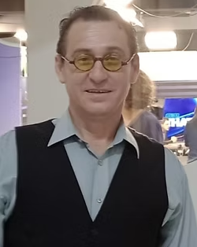
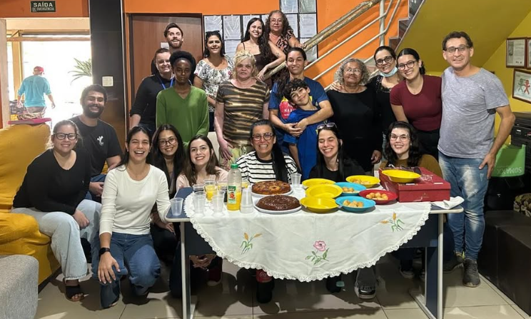
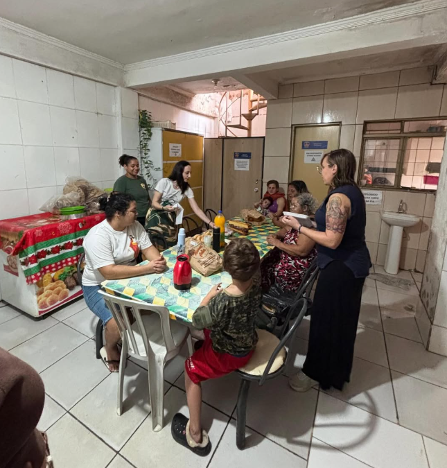
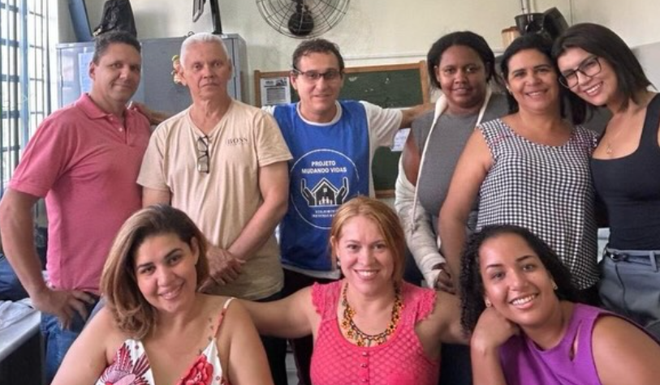
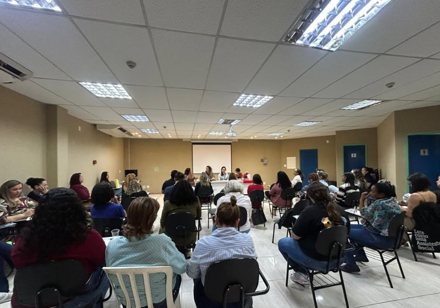

Nossa História
Uma jornada de amor, solidariedade e transformação que começou em 2014 e continua mudando vidas todos os dias.
Projeto Mudando Vidas
O Projeto Mudando Vidas, desenvolvido pela OSC de igual denominação, é um Serviço Socioassistencial de Acolhimento, na modalidade Abrigo Institucional, a pessoas do gênero feminino, com perfil/histórico de vivência em situação de rua, e eventualmente crianças e adolescentes de sua responsabilidade e que as acompanham.
A Organização, nascida em setembro de 2014, surgiu voltada a desenvolver ações e atuação junto a pessoas em processo de pré ou pós tratamento em Comunidades terapêuticas (voluntariamente) por uso/abuso de álcool e drogas, e apoio e suporte no período em que permaneciam em tratamento.
Além disto o Projeto militou e ainda milita com ativismo na área de prevenção e combate ao uso e abuso de álcool e drogas, e ao atendimento à população em situação de rua em geral.

Ricardo Tostes - Presidente do Projeto Mudando Vidas
Sediado no Jardim Paiva, zona Oeste do Distrito Sede de Ribeirão Preto, a partir de 2021 firmou por ter sido classificado em Edital de Chamamento Público, parceria na gestão compartilhada, em regime de mutua e recíproca cooperação em interesse público, com a Secretaria Municipal de Assistência Social, da Prefeitura Municipal de Ribeirão Preto no Serviço Socioassistencial nacionalmente tipificado que atualmente desenvolve, especificamente com pessoas do gênero feminino, com histórico ou perfil de situação de rua.
A parceria firmada em 2021, foi prorrogada em 2022 e 2023, e ampliada de 12 vagas iniciais para 16 vagas atuais, após ampliação do espaço de acolhimento do Projeto.
O projeto tem obtido índices e indicadores positivos, acima da média, no encaminhamento de acolhidas ao retorno à vida comunitária de forma positiva, proativa e pró social, depois de um período de atendimento psicossocial na Unidade Casa Abrigo mantida, não voltando as mesmas a vivência de rua, nem ao consumo ou uso e abuso de substância psicoativas, retomando relações familiares, e/ou afetivas, e profissionais.
O Projeto trabalha em rede, com parceiros públicos e privados diversos, colaboradores ou ofertando serviços de inclusão em políticas públicas, notadamente: educação, saúde, educação para e pelo trabalho, espiritualidade respeitando o direito de crença de cada acolhida, arte e cultura, esporte, recreação e lazer, entre outras.
A Casa Abrigo, unidade de atendimento do projeto atualmente tem hoje uma equipe composta por: Coordenação, três técnicos em equipe intersetorial (assistente social, psicólogo e pedagoga), 04 educadores-cuidadores-sociais, 04 auxiliares de educadores-cuidadores-sociais, dois dos quais exercendo a função de cozinheiro.
O projeto pretende, tão logo possível ampliar suas vagas um pouco mais e ampliar sua atuação em outros serviços socioassistenciais, se obter classificação em participação em editais de chamamento.
Importante concluir, lembrando que a parceria com o Poder Público é voluntária e gratuita, não sendo a OSC remunerada em nenhum centavo e de nenhuma forma pela cessão de sua experiência/expertise, igual e semelhante. Repasse de recursos realizados são exclusivamente para fazer frente a despesas de custeio do projeto, deles se prestando contas regularmente e restituindo eventuais saldos remanescentes ao final da mesma.
Nossa Linha do Tempo
Fundação do Projeto
Nascimento da Organização voltada a pessoas em pré ou pós tratamento em comunidades terapêuticas.
Parceria com a Prefeitura
Classificação em Edital de Chamamento Público e parceria com a Secretaria Municipal de Assistência Social de Ribeirão Preto.
Prorrogação e Ampliação
Parceria prorrogada e vagas ampliadas de 12 para 16 após ampliação do espaço de acolhimento.
Continuamos transformando vidas
Equipe completa, indicadores positivos e sonhos de expandir ainda mais nossas ações.
Nossa Galeria




Faça Parte